因群里有成员对这方面存在疑问，所以写一篇文章详细解释下游戏内性能相关。
需要注意的是，本人对于唤境中这些内容的最具体理解未必到位，因此可能出现一些技术细节上的错误，希望大佬能指出错误，感激不尽！
为了保证一般开发者也能看得懂，文章会尽量避免非常专业和硬核的描述，相应地就会降低严谨性。如果有兴趣深究，请查找更专业的资料。
此外，本文并非是针对唤境游戏的性能优化而写的，如果您的引擎或者制作的游戏出现卡顿，请前往 b 站查看小嗦大佬的教程。
传送门：https://www.bilibili.com/video/BV1wg411E7oF
# 一、性能相关概念（基础内容）
通常情况下，我们会通过几个方面来评估一个游戏运行的性能表现，分别是帧率、帧生成时间、CPU 占用、GPU 占用、内存占用、显存占用等。
# 1. 帧率 / FPS
游戏之所以能呈现动态的画面，是因为它会以一个很快的速度生成画面，每秒几十张甚至上百张，其中每个画面就被称为一 “帧” 。因此，帧是游戏画面在时间上的最小单位。
于是，我们有了帧率的概念。帧率，就是每秒钟游戏生成的帧数量。很明显的，帧率越高，我们肉眼感觉到的画面就越流畅，反之则越卡顿。当帧率为 0 时，游戏就停止在一张静态的图片上。
一般而言，当帧率达到 60 时，人眼观察到的画面就可以称为 “比较流畅” 了。
# 2. 帧生成时间（或帧间隔）/ FRAMETIME
有了帧率的概念，我们就可以引入帧生成时间的概念了。
游戏引擎每生成一帧画面，都需要消耗一定的时间，这个时间就称为帧生成时间。
帧生成时间波动是造成瞬间卡顿的原因之一。设想一个极端情况，在运行的某一秒里，游戏花了 0.9 秒来渲染第一帧，然后在剩下 0.1 秒里渲染了剩下的 59 帧。这时候的平均帧率还是 60，但是你在玩的时候就会明显感觉到游戏发生了一次剧烈的卡顿，因为这 0.9 秒的时间内游戏处于静止状态。
帧生成时间和间隔的定义，严格来说并不是完全一致的，但本文并不是进行画面技术研究，所以暂且认为它们是同一个概念。
# 3.CPU 占用 / CPU
在计算机中，CPU 负责通用计算，也就是任何计算理论上都可以由 CPU 完成。在游戏中，控制游戏系统运行、通过公式计算数据、运行函数等都是由 CPU 完成的。最开始的时候，游戏画面的渲染也是由 CPU 完成的，但后来人们发现 CPU 难以胜任这一要求，于是将这个工作交由 GPU 完成。有关这一段历史的发展，详见 https://www.bilibili.com/video/BV1Hb41177JB
对于现代电脑和手机来说，它们的 CPU 性能都相当强大，可以完成非常密集的运算需求。但它们的性能也不是无限的，而且在手机、笔记本电脑上，CPU 是耗电量非常大的元件。所以，CPU 会直接影响游戏的性能表现，降低 CPU 的占用率也可以有效提高游戏运行的效率，以及在低端设备上成功运行的可能性。
# 4.GPU 占用 / GPU
前面提到了，GPU 是用来替代 CPU 来完成画面渲染工作的硬件。所以，GPU 是离游戏实际画面最近的硬件，因为游戏画面就是由它生成的。
GPU 负责的内容就是渲染画面，例如显示图片、文字等。
对于唤境来说，由于唤境只是 2D 游戏引擎，因此对于现代 GPU 来说压力比较低，但还是存在运行效率过低的情况。
有关 GPU 运行解析的内容请见官方教程 https://evkworld.cn/wiki/58
# 5. 显存占用 / (VRAM、VIDEO MEMORY、IMAGE MEMORY 等)
显存，又称显示内存、显卡内存、图形内存、视频内存等，是显卡用来储存图像信息的临时空间。
对于集成显卡（例如手机）而言，显存就是从内存中分出来的部分；对于独立显卡（例如高性能电脑）而言，显存是单独集成在显卡中的一个存储器。所以，当游戏在手机上运行的时候，游戏会同时消耗两份内存空间，一部分用于程序运行，另一部分充当显存。因此，如果您的游戏在电脑上运行很正常，而在低端手机上就无法运行或者特别卡顿，则有可能是因为游戏消耗了较多的显存和内存。
# 二、唤境中跟性能有关的表达式
唤境引擎并没有提供性能监控相关的组件和能力，但可以通过表达式获取到性能数据。
所有相关表达式都在系统部分中。
# 1. 帧率
表达式：fps
刷新频率：每秒 1 次
返回值类型：整数
建议使用方法：直接通过表达式获取帧率即可。
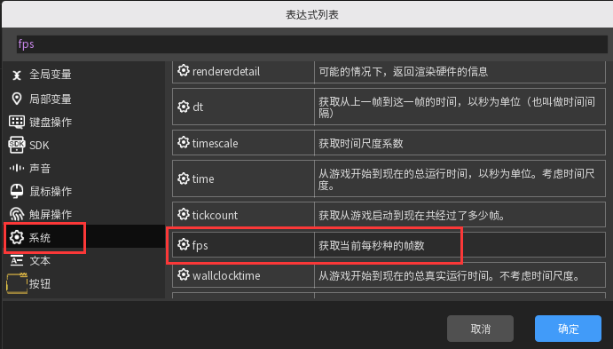
# 2. 帧生成时间（帧间隔）
表达式：dt
刷新频率：每帧 1 次
返回值类型：单精度浮点数，即 6 位小数
（当测量单帧间隔时会返回 10 位小数）
其它：引擎内描述为 “时间间隔”
建议使用方法：先将数据乘以 1000，然后使用 roundto () 将其化简到 1-3 位小数，最后加上单位 “ms”（毫秒），即可得到友好的数字展示。
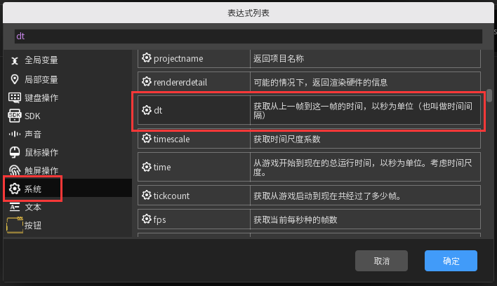
# 3.CPU 占用（CPU 时间）
表达式：cpuutilisation
刷新频率：每秒 1 次
其它：引擎内描述为 “CPU 在游戏中消耗的时间”
返回值类型：双精度浮点数，即 18 位小数。
建议使用方法：先将数据乘以 100，然后使用 roundto () 将其简化到 1-2 位小数，最后加上百分比符号 “%”，即可得到友好的数字展示。
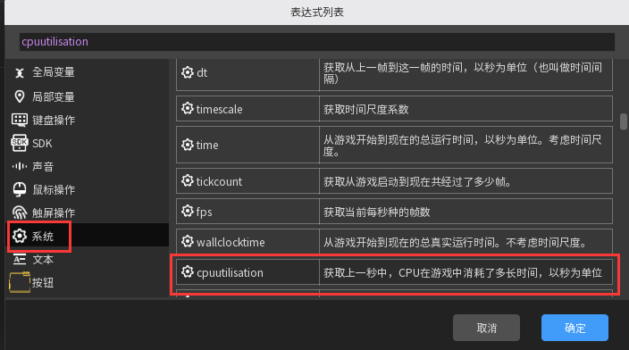
# 4.GPU 占用（渲染消耗时间）
表达式：gpuutilisation
刷新频率：每秒 1 次
其它：引擎内描述为 “GPU 在游戏中消耗的时间”
返回值类型：9 位小数。
建议使用方法：与 CPU 占用相同。
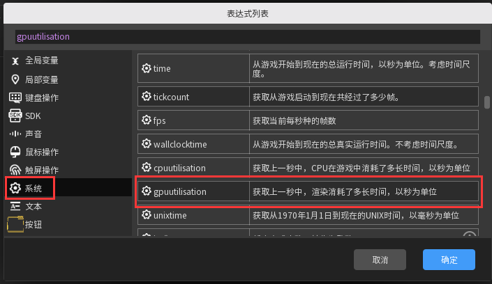
# 5. 显存占用
表达式：imagememoryusage
刷新频率：每帧 1 次
返回值类型：9 位小数。
建议使用方法：直接通过表达式获取即可。
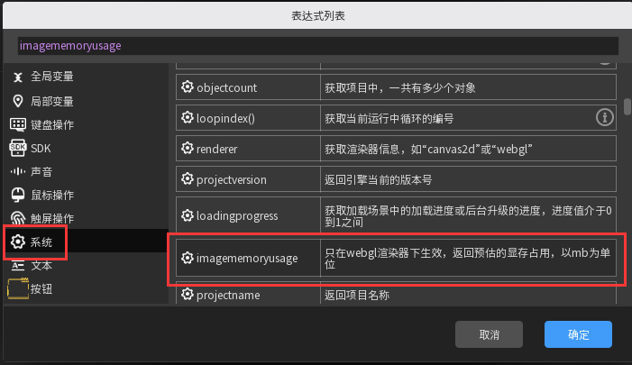
# 三、制作性能监控窗口
光了解了上面所有的信息，但如果不会用，那就都是白搭。接下来，我会一步步解释如何制作游戏内的性能监控悬浮窗。
1. 打开游戏项目，新建对象：一个文本、一个精灵和一个按钮，精灵的贴图替换成一张长方形图片即可
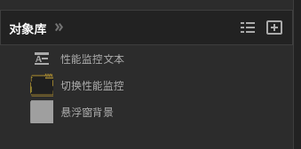
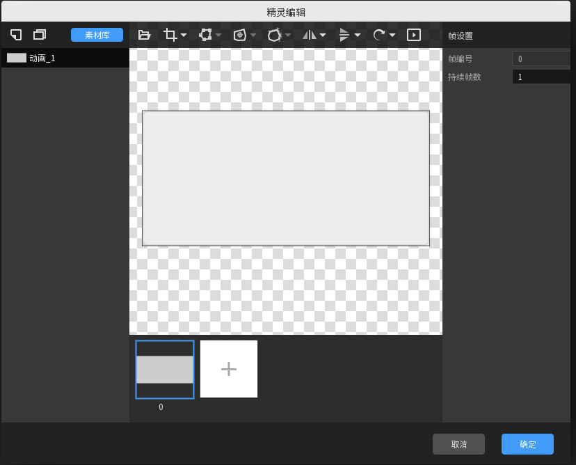
2. 新建几个全局变量，“启用测量”、“悬浮窗 x”、“悬浮窗 y”。其中，第一个是布尔类型变量，是必需的；后两个是数值类型变量，不是必需的。
后两个的初始值不建议设为 0，应该根据你选择的默认位置来设置。
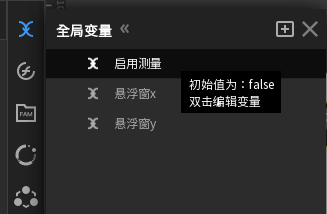
3. 新建一个图层组 “悬浮窗”，设置为全局图层组，然后将精灵、文本和按钮拖入该图层组中，调整文本和精灵的大小及属性，文本选择左对齐、上下居中对齐，大小跟精灵差不多一样大就行
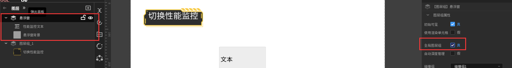
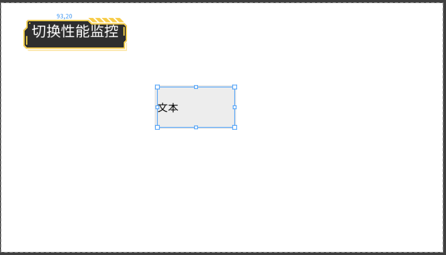
4. 为文本添加拖拽和定时器能力，为精灵添加绑定能力
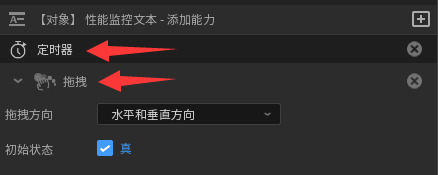
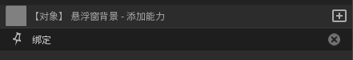
5. 新建一条全局事件表，名称为 “性能监控窗口”，或者任何你喜欢的名字。
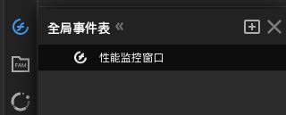
6. 开始写事件。可以参考我下面的这种设计方案。
核心思路：
（1）当 “启用测量” 变量为 “真” 时，显示文本和精灵，否则隐藏；注意，不要重复触发，可以加入一个触发器（例如 “仅触发一次”）来解决；
（2）制作好看的文本排版；
（3）避免每帧检测和每帧改变文本；
（4）（可选）实现悬浮窗的拖动，以及位置记忆。
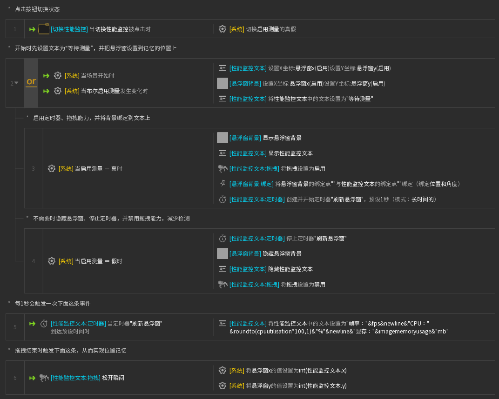
文本内容供参考：
“帧率：” & fps & newline & “CPU：” & roundto (cpuutilisation*100,1) & “%” & newline & “显存：” & imagememoryusage & “mb”
7. 在每个你希望有监控悬浮窗的场景下都新建一个叫做 “悬浮窗” 的图层组，不需要放入任何内容，因为你之前已经选中了全局事件表。
然后将刚才写的全局事件表应用于每个你希望有悬浮窗的场景。
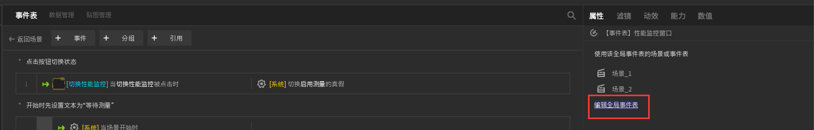
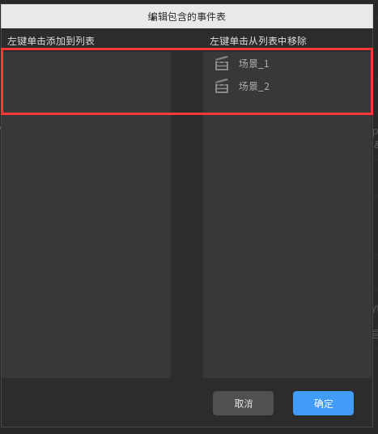
8. 检查效果
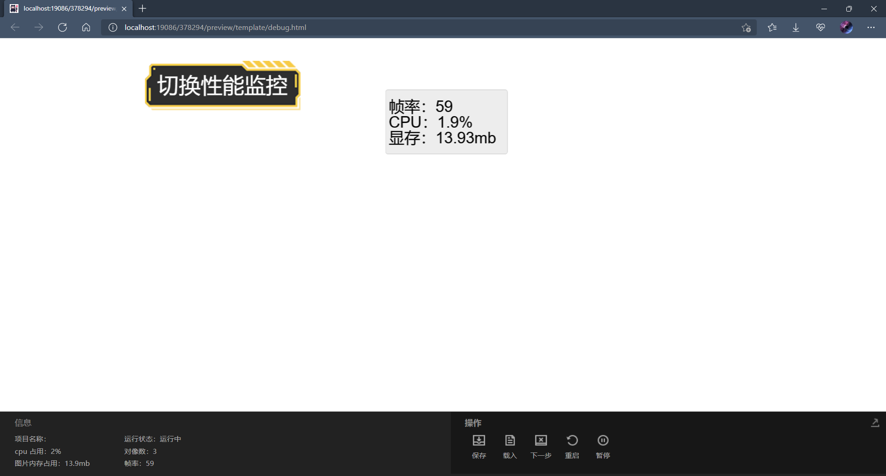
9. 可额外优化的内容
拖拽能力没有进行区域限制，可以直接把悬浮窗拖到屏幕外，如何解决？
・提示：只需要使用一个能力即可解决。
事件表里还有可以进一步优化的内容？
・提示：绑定能力。
# 四、总结
通过这一篇文章的解析和教学，你应该对唤境游戏的性能及其监控方法有了一定的了解。
在多数情况下，唤境游戏其实并不需要这么多高级的技术细节，但这类功能可以给你的游戏添砖加瓦，起到锦上添花的作用。
文章撰写仓促，部分内容做不到非常细致和详尽，也可能有错误，欢迎大佬前来指正！
额外优化内容：
（1）给文本和精灵分别添加 “边界限制” 能力即可；
（2）在启用测量为假的时候，给精灵添加一条动作：“取消绑定”